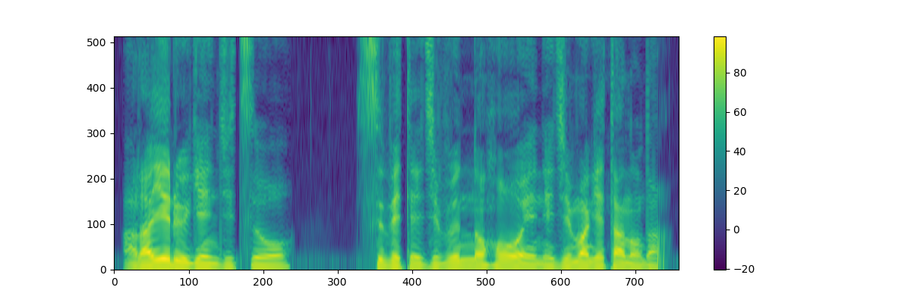
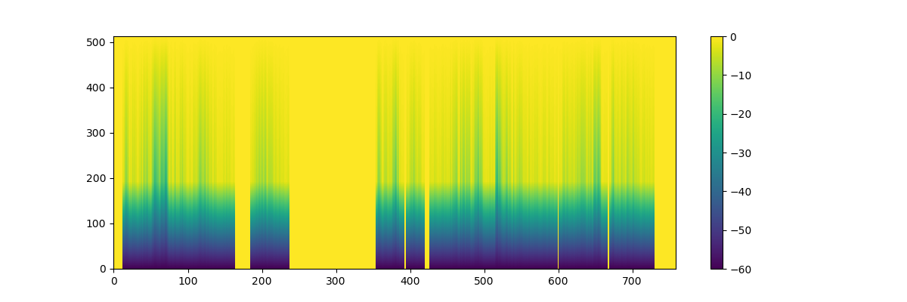
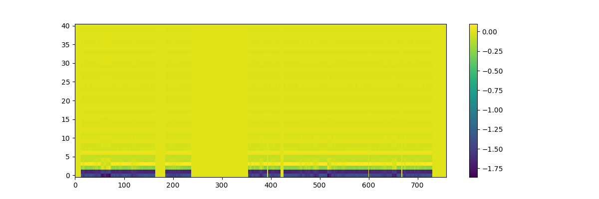

WORLD.jl
WORLD — Module.A lightweitht julia wrapper for WORLD
a high-quality speech analysis, manipulation and
synthesis system. WORLD provides a way to decompose a speech signal into:
Fundamental frequency (F0)
spectral envelope
aperiodicity
and re-synthesize a speech signal from these paramters. Please see the project page for more details on the WORLD.
WORLD.jl is based on a modified version of WORLD (r9y9/WORLD).
https://github.com/r9y9/WORLD.jl
Usage
In the following examples, suppose x::Vector{Float64} is a input monoral speech signal like:

F0 estimation and refinement
DIO
opt = DioOption(f0floor=71.0, f0ceil=800.0, channels_in_octave=2.0,
period=period, speed=1)
f0, timeaxis = dio(x, fs, opt)
StoneMask
f0 = stonemask(x, fs, timeaxis, f0)
Spectral envelope estimation by CheapTrick
spectrogram = cheaptrick(x, fs, timeaxis, f0)
Aperiodicity ratio estimation by D4C
aperiodicity = d4c(x, fs, timeaxis, f0)
Synthesis
y = synthesis(f0, spectrogram, aperiodicity, period, fs, length(x))
Compact speech parameterization
Raw spectrum envelope and aperiodicity spectrum are relatively high dimentional (offen more than 513 or 1025) so one might want to get more compact representation. To do so, mel-cepstrum could be a good choice. As far as I know, this would be useful in statistical speech synthesis and statistical voice conversion.
spectrum envelope to mel-cepstrum
mc = sp2mc(spectrogram, order, α) # e.g. order=40, α=0.41where order is the order of mel-cepstrum (except for 0th) and α is a frequency warping parameter.

mel-cepstrum to spectrum envelope
approximate_spectrogram = mc2sp(mc, α, get_fftsize_for_cheaptrick(fs))aperiodicity spectrum to aperiodicity mel-cesptrum
ap_mc = sp2mc(aperiodicity, order, α) # e.g. order=40, α=0.41
HTS v2.3 beta seems to parameterize aperiodicity spectrum in this way (but does this really make sense?).
aperiodicity mel-cepstrum to aperiodicity spectrum
approximate_aperiodicity = mc2sp(ap_mc, α, get_fftsize_for_cheaptrick(fs))
For the complete code of visualizations shown above, please check the IJulia notebook.
Exports
Index
WORLD.cheaptrickWORLD.d4cWORLD.dioWORLD.get_fftsize_for_cheaptrickWORLD.interp1WORLD.interp1!WORLD.mc2spWORLD.sp2mcWORLD.stonemaskWORLD.synthesisWORLD.CheapTrickOptionWORLD.D4COptionWORLD.DioOption
Reference
WORLD.cheaptrick — Method.cheaptrick(x, fs, timeaxis, f0; opt)
CheapTrick calculates the spectrogram that consists of spectral envelopes estimated by CheapTrick.
Parameters
x: Input signalfs: Sampling frequencytime_axis: Time axisf0: F0 contouropt: CheapTrick option
Returns
spectrogram: Spectrogram estimated by CheapTrick.
WORLD.d4c — Method.d4c(x, fs, timeaxis, f0; opt)
D4C calculates the aperiodicity estimated by D4C.
Parameters
x: Input signalfs: Sampling frequencytime_axis: Time axisf0: F0 contour
Returns
aperiodicity: Aperiodicity estimated by D4C.
WORLD.dio — Function.dio(x, fs)
dio(x, fs, opt)
Dio estimates F0 trajectory given a monoral input signal.
Paremters
x: Input signalfs: Sampling frequencyopt: DioOption
Returns
time_axis: Temporal positions.f0: F0 contour.
WORLD.get_fftsize_for_cheaptrick — Method.get_fftsize_for_cheaptrick(fs)
GetFFTSizeForCheapTrick calculates the FFT size based on the sampling frequency and the lower limit of f0 (It is defined in world.h).
Parameters
fs: Sampling frequency
Returns
fftsize: FFT size
WORLD.interp1! — Method.interp1!(x, y, xi, yi)
inplace version of interp1
Parameters
x: Input vector (Time axis)y: Values at x[n]xi: Required vectoryi: Interpolated vector
WORLD.interp1 — Method.interp1(x, y, xi)
interp1 interpolates to find yi, the values of the underlying function Y at the points in the vector or array xi. x must be a vector. http://www.mathworks.co.jp/help/techdoc/ref/interp1.html
Parameters
x: Input vector (Time axis)y: Values at x[n]xi: Required vector
Returns
yi: Interpolated vector
WORLD.mc2sp — Method.mc2sp(mc, α, fftlen)
mc2sp converts mel-cepstrum to power spectrum envelope.
$c_{\alpha}(m) -> |X(\omega)|^{2}$
equivalent: exp(2real(MelGeneralizedCepstrums.mgc2sp(mc, α, 0.0, fftlen))) Note that MelGeneralizedCepstrums.mgc2sp returns log magnitude spectrum.
WORLD.sp2mc — Method.sp2mc(powerspec, order, α; fftlen)
sp2mc converts power spectrum envelope to mel-cepstrum
$|X(\omega)|^{2} -> c_{\alpha}(m)$
WORLD.stonemask — Method.stonemask(x, fs, timeaxis, f0)
StoneMask refines the estimated F0 by Dio,
Parameters
x: Input signalfs: Sampling frequencytime_axis: Temporal informationf0: f0 contour
Returns
refined_f0: Refined F0
WORLD.synthesis — Method.synthesis(f0, spectrogram, aperiodicity, period, fs, len)
Synthesis synthesize the voice based on f0, spectrogram and aperiodicity (not excitation signal.
Parameters
f0: f0 contourspectrogram: Spectrogram estimated by CheapTrickaperiodicity: Aperiodicity spectrogram based on D4Cperiod: Temporal period used for the analysisfs: Sampling frequencylen: Length of the output signal
Returns
y: Calculated speech
WORLD.CheapTrickOption — Type.CheapTrick options
Fields
q1
WORLD.D4COption — Type.D4C options (nothing for now, but for future changes)
Fields
dummy
WORLD.DioOption — Type.DioOption represents a set of options that is used in DIO, a fundamental frequency analysis.
Fields
f0floorf0ceilchannels_in_octaveperiodframe period in ms
speedallowed_rangeadded in v0.2.1-2 (WORLD 0.2.0_2)